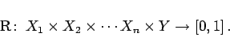
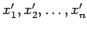
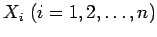
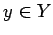
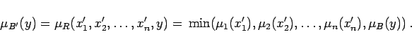
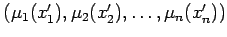
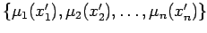
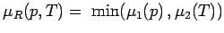
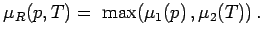

|  | (5.406a) |
Für das aktuelle Ereignis  mit den scharfen Werten der Kenngrößen  und  gilt
|  | (5.406b) |
Anmerkung: Die Größe min heißt Erfüllungsgrad der Regel, und die Größen  repräsentieren die fuzzy-wertigen Eingangsgrößen.
| Beispiel |
|
Bildung von Fuzzy-Relationen für einen Zusammenhang zwischen den Größen ,,mittlerer`` Druck und ,,hohe`` Temperatur (s. Abbildung aus vier Teilen):
Die folgende Abbildung zeigt graphisch das Ergebnis der Bildung von Fuzzy-Relationen: In der linken Abbildung ist das Ergebnis der Verknüpfung mittlerer Druck UND hohe Temperatur mit dem min-Operator  dargestellt. Die rechte Abbildung zeigt das Ergebnis der Verknüpfung ODER mit dem max-Operator  |